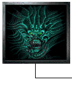
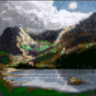
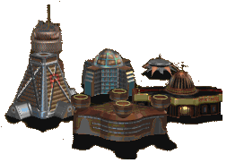
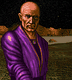
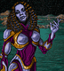

Welcome, fellow Orion players.Somewhere beyond the next star, another player is plotting a very different future for the galaxy. MOO2-SGC is a gathering place for people who would rather find out together. We are building a social community around Master of Orion II: friendly multiplayer, local meetups, shared discoveries, and campaigns worth returning to. New explorers and old hands are equally welcome. You do not need a perfected build order to pull up a chair. |
 All empires welcome. |
Our first local System is forming in San Diego, California. The wider community is not limited to one city.
GNN — Galactic News Network
| 04 OCT 2026 NEW |
First contact. The community is taking shape. Our first goal is a small, friendly gathering: meet a few players, get everyone connected, and start a galaxy together. No first-session date or venue has been confirmed. Watch this page for the first game announcement. |
A seat at the galactic table
 |
Not every galaxy has to be a tournament. The aim is to make room for learning games, friendly rivalries, and longer campaigns with people you enjoy playing alongside. Before a game begins, agree on the rules, the pace, and when everyone needs to leave. A good evening matters more than squeezing in one last battle. |
| Local System | San Diego — forming |
|---|---|
| Date and venue | Not yet arranged |
| Game version and rules | To be agreed by the participating players |
| Sign-up | Not yet open. Join the MOO2-SGC Discord or email us to follow announcements. |
Getting your installation ready? The MOO2-SGC Launcher & Installer repository is the official source for community launcher, installer, and download files. For general MOO2 setup information, the MOO2 community installation guide remains a useful reference. Confirm the same patch and mod setup with your fellow players before a session.
Local Systems
 |
San DiegoStatus: forming. San Diego is the first local System: a place to begin meeting face to face, compare notes, and put a real person behind the opposing empire. A System is our name for a local group, not a separate faction or a requirement to live nearby. |
Elsewhere in the galaxy? The idea is portable. Future Systems can grow around other cities as people come together. No other local groups are being announced yet.
Star links
The people who keep Orion running, and a few places worth exploring.
- » MOO2-SGC GitHub website mirrorA second home for this website on GitHub Pages.
- » MOO2-SGC Game BlogCommunity news, development notes, and longer updates. Blog posts live on the blog itself and are not mirrored into this homepage.
- » MOO2-SGC DiscordThe community chat server for meeting players, planning games, and staying in touch.
- » MOO2-SGC Launcher & InstallerThe official GitHub repository and download source for the MOO2-SGC launcher, installer, updater, patches, and related release files.
- » MOO2MODFan patches, documentation, tools, and links to the wider MOO2 community.
- » The MOO2 Book: installationThe community project's setup guide. Consult the maintained instructions rather than an old download mirror.
- » Master of Orion II OnlineSiron's long-running collection of MOO2 articles and strategy discussions.
- » The first MOO2MOD website — 2015The early ICE mod homepage, preserved by the Internet Archive.
- » MicroProse's Master of Orion II page — 1996The original-era game page: raster graphics, space stations, and a very different World Wide Web.
These are independent sites, not MOO2-SGC services. Archived pages can contain obsolete links and instructions.
Hailing frequencies
Public community email: moo2-sgc@hotmail.com
Community Discord: https://discord.gg/cXW3NecgCN
You can also follow development and community news at the MOO2-SGC Game Blog. This homepage does not copy or embed blog posts.
This remains a simple static homepage — not a sign-up form. No names or messages are collected here.
The plan is simple: be welcoming, agree on the game rules, respect other people's time, and keep the rivalry inside the galaxy.


Different worlds. The same game.